兜 をドロップするmob一覧
一覧ページへ
| 両刀骸骨戦士 | アンデット | 一般1 | |||||||
|---|---|---|---|---|---|---|---|---|---|
 | 片手剣(410) | 弓(270) | 矢(410) | 兜・帽子(230) | 槍投擲機(210) | 帰還(160) | クロー(410) | 銃(270) | 魔弾(410) |
| 防御骸骨戦士 | アンデット | 一般2 | |||||||
| 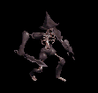 | 片手剣(380) | 槍(250) | 弾(380) | 兜・帽子(210) | 槍投擲機(190) | 帰還(150) | クロー(380) | 箒(250) | |
| 骸骨剣士 | アンデット | 一般3 | |||||||
 | 片手剣(360) | 弓(240) | 矢(360) | 兜・帽子(200) | 槍投擲機(180) | 帰還(140) | クロー(360) | 銃(240) | 魔弾(360) |
| 死の双剣士 | アンデット | セミ1 | |||||||
 | 片手剣(390) | 槍(260) | 鍵(30) | 兜・帽子(220) | 槍投擲機(200) | 帰還(160) | クロー(390) | 箒(260) | |
| 地獄の双剣 | アンデット | ボス1 | |||||||
 | 片手剣(470) | 弓(310) | 鍵(50) | 兜・帽子(260) | 槍投擲機(240) | 帰還(190) | クロー(470) | 銃(310) | |
| ゾンビ | アンデット | 一般3 | |||||||
 | 投擲(360) | 牙(240) | イベント(360) | 兜・帽子(200) | 爪(180) | 帰還(140) | 双剣(240) | ||
| スリップワーカー | アンデット | 一般1 | |||||||
 | スリング(410) | ステッキ(270) | 弾(410) | 兜・帽子(230) | 首(210) | ブローチ(120) | |||
| ジャンキー | アンデット | セミ1 | |||||||
 | スリング(390) | ステッキ(260) | 鍵(30) | 兜・帽子(220) | イヤリング(200) | ブローチ(150) | |||
| ドゥームキャスター | 人間 | ボス1 | |||||||
 | 杖(470) | スリング(310) | 弾(470) | 兜・帽子(260) | 首(240) | 能力向上2(190) | 本(470) | ||
| コートナイト | 人間 | 一般3 | |||||||
 | 槍(360) | 両手剣(240) | イベント(360) | 兜・帽子(200) | 手首(180) | 十字架(130) | 鎌(240) | 箒(360) | |
| テンプラー | 人間 | セミ2 | |||||||
| 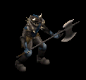 | 槍(420) | 両手剣(280) | 鍵(30) | 兜・帽子(230) | 手首(210) | 十字架(150) | 鎌(280) | 箒(420) | |
| ダークビショップ | 人間 | ボス2 | |||||||
 | 鈍器(490) | 翼(330) | 盾(490) | 兜・帽子(270) | 首(250) | 十字架(220) | 水晶(330) | ||
| エルフ暗殺者 | 人間 | 一般4 | |||||||
 | 片手剣(300) | 投擲(200) | 盾(300) | 兜・帽子(170) | 指輪(150) | 腕刺青(130) | クロー(300) | ||
| エルフ巡察者 | 人間 | セミ1 | |||||||
 | 片手剣(390) | 弓(260) | 矢(390) | 兜・帽子(220) | 指輪(200) | 腕刺青(140) | クロー(390) | 銃(260) | 魔弾(390) |
| アイウィング | 悪魔 | 一般3 | |||||||
 | 笛(360) | 翼(240) | 状態異常回復1(360) | 兜・帽子(200) | 冠(180) | 帰還(140) | 水晶(240) | ||
| ドゥームスフィア | 悪魔 | 一般4 | |||||||
 | 笛(300) | 翼(200) | 状態異常回復1(300) | 兜・帽子(170) | 首(150) | 帰還(120) | 水晶(200) | ||
| ビホルダー | 悪魔 | セミ2 | |||||||
| 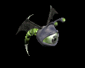 | 投擲(420) | 翼(280) | 状態異常回復1(420) | 兜・帽子(230) | 冠(210) | 帰還(170) | 水晶(280) | ||
| アルゴス | 悪魔 | セミ3 | |||||||
 | 笛(450) | 翼(300) | 鍵(450) | 兜・帽子(250) | 首(230) | 帰還(180) | 水晶(300) | ||
| オーバーシアー | 悪魔 | ボス2 | |||||||
 | 投擲(490) | 翼(330) | cP回復(490) | 兜・帽子(270) | 冠(250) | 帰還(200) | 水晶(330) | ||
| スコーピオン | 動物 | 一般1 | |||||||
| 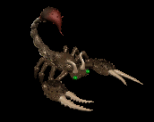 | 弓(410) | 槍(270) | 盾(410) | 兜・帽子(230) | イヤリング(210) | 特殊1(160) | 箒(270) | 銃(410) | |
| ポイズンテール | 動物 | 一般2 | |||||||
| 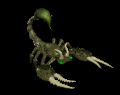 | 弓(380) | 槍(250) | 矢(380) | 兜・帽子(210) | 手首(190) | 特殊1(150) | 箒(250) | 銃(380) | 魔弾(380) |
| デスピンサー | 動物 | 一般3 | |||||||
 | 弓(360) | 槍(240) | 盾(360) | 兜・帽子(200) | イヤリング(180) | 特殊1(140) | 箒(240) | 銃(360) | |
| 食人スコーピオン | 動物 | セミ2 | |||||||
| 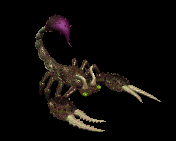 | 弓(420) | 槍(280) | 矢(420) | 兜・帽子(230) | イヤリング(210) | 特殊1(170) | 箒(280) | 銃(420) | 魔弾(420) |
| スノースコルピオ | 動物 | ボス2 | |||||||
 | 弓(490) | 槍(330) | 盾(490) | 兜・帽子(270) | 手首(250) | 特殊1(200) | 箒(330) | 銃(490) | |
| イナゴの群れ | 動物 | セミ1 | |||||||
 | 笛(390) | 翼(260) | イベント(390) | 兜・帽子(220) | 首(200) | 帰還(160) | 水晶(260) | ||
| キングベアー | 動物 | ボス1 | |||||||
| 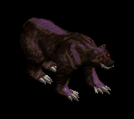 | 翼(470) | 笛(310) | 鍵(30) | 兜・帽子(260) | 爪(240) | 宝石(190) | 水晶(470) | ||
| 両刀骸骨戦士Ex | アンデット | 一般1 | |||||||
| 片手剣(410) | 弓(270) | 矢(410) | 兜・帽子(230) | 槍投擲機(210) | 帰還(160) | クロー(410) | 銃(270) | 魔弾(410) |
| 防御骸骨戦士Ex | アンデット | 一般2 | |||||||
| 片手剣(380) | 槍(250) | 弾(380) | 兜・帽子(210) | 槍投擲機(190) | 帰還(150) | クロー(380) | 箒(250) | ||
| 骸骨剣士Ex | アンデット | 一般3 | |||||||
| 片手剣(360) | 弓(240) | 矢(360) | 兜・帽子(200) | 槍投擲機(180) | 帰還(140) | クロー(360) | 銃(240) | 魔弾(360) |
| 死の双剣士Ex | アンデット | セミ1 | |||||||
| 片手剣(450) | 槍(300) | 鍵(30) | 兜・帽子(250) | 槍投擲機(230) | 帰還(180) | クロー(450) | 箒(300) | |
| 地獄の双剣Ex | アンデット | ボス1 | |||||||
| 片手剣(1200) | 弓(800) | 鍵(50) | 兜・帽子(670) | 槍投擲機(600) | 帰還(480) | クロー(1200) | 銃(800) | |
| ゾンビEx | アンデット | 一般3 | |||||||
| 投擲(360) | 牙(240) | イベント(360) | 兜・帽子(200) | 爪(180) | 帰還(140) | 双剣(240) | ||
| スリップワーカーEx | アンデット | 一般1 | |||||||
| スリング(410) | ステッキ(270) | 弾(410) | 兜・帽子(230) | 首(210) | ブローチ(120) | |||
| ジャンキーEx | アンデット | セミ1 | |||||||
| スリング(450) | ステッキ(300) | 鍵(30) | 兜・帽子(250) | イヤリング(230) | ブローチ(150) | |||
| ドゥームキャスターEx | 人間 | ボス1 | |||||||
| 杖(1200) | スリング(800) | 弾(1200) | 兜・帽子(670) | 首(600) | 能力向上2(480) | 本(1200) | ||
| コートナイトEx | 人間 | 一般3 | |||||||
| 槍(360) | 両手剣(240) | イベント(360) | 兜・帽子(200) | 手首(180) | 十字架(130) | 鎌(240) | 箒(360) | |
| テンプラーEx | 人間 | セミ2 | |||||||
| 槍(650) | 両手剣(430) | 鍵(50) | 兜・帽子(360) | 手首(330) | 十字架(150) | 鎌(430) | 箒(650) | ||
| ダークビショップEx | 人間 | ボス2 | |||||||
| 鈍器(2000) | 翼(1330) | 盾(2000) | 兜・帽子(1110) | 首(1000) | 十字架(220) | 水晶(1330) | ||
| エルフ暗殺者Ex | 人間 | 一般4 | |||||||
| 片手剣(300) | 投擲(200) | 盾(300) | 兜・帽子(170) | 指輪(150) | 腕刺青(130) | クロー(300) | ||
| エルフ巡察者Ex | 人間 | セミ1 | |||||||
| 片手剣(450) | 弓(300) | 矢(450) | 兜・帽子(250) | 指輪(230) | 腕刺青(140) | クロー(450) | 銃(300) | 魔弾(450) |
| アイウィングEx | 悪魔 | 一般3 | |||||||
| 笛(360) | 翼(240) | 状態異常回復1(360) | 兜・帽子(200) | 冠(180) | 帰還(140) | 水晶(240) | ||
| ドゥームスフィアEx | 悪魔 | 一般4 | |||||||
| 笛(300) | 翼(200) | 状態異常回復1(300) | 兜・帽子(170) | 首(150) | 帰還(120) | 水晶(200) | ||
| ビホルダーEx | 悪魔 | セミ2 | |||||||
| 投擲(650) | 翼(430) | 状態異常回復1(650) | 兜・帽子(360) | 冠(330) | 帰還(260) | 水晶(430) | |||
| アルゴスEx | 悪魔 | セミ3 | |||||||
| 笛(800) | 翼(530) | 鍵(50) | 兜・帽子(440) | 首(400) | 帰還(320) | 水晶(530) | ||
| オーバーシアーEx | 悪魔 | ボス2 | |||||||
| 投擲(2000) | 翼(1330) | cP回復(2000) | 兜・帽子(1110) | 冠(1000) | 帰還(800) | 水晶(1330) | ||
| スコーピオンEx | 動物 | 一般1 | |||||||
| 弓(410) | 槍(270) | 盾(410) | 兜・帽子(230) | イヤリング(210) | 特殊1(160) | 箒(270) | 銃(410) | ||
| ポイズンテールEx | 動物 | 一般2 | |||||||
| 弓(380) | 槍(250) | 矢(380) | 兜・帽子(210) | 手首(190) | 特殊1(150) | 箒(250) | 銃(380) | 魔弾(380) | |
| デスピンサーEx | 動物 | 一般3 | |||||||
| 弓(360) | 槍(240) | 盾(360) | 兜・帽子(200) | イヤリング(180) | 特殊1(140) | 箒(240) | 銃(360) | |
| 食人スコーピオンEx | 動物 | セミ2 | |||||||
| 弓(650) | 槍(430) | 矢(650) | 兜・帽子(360) | イヤリング(330) | 特殊1(260) | 箒(430) | 銃(650) | 魔弾(650) | |
| スノースコルピオEx | 動物 | ボス2 | |||||||
| 弓(2000) | 槍(1330) | 盾(2000) | 兜・帽子(1110) | 手首(1000) | 特殊1(800) | 箒(1330) | 銃(2000) | |
| イナゴの群れEx | 動物 | セミ1 | |||||||
| 笛(450) | 翼(300) | イベント(450) | 兜・帽子(250) | 首(230) | 帰還(180) | 水晶(300) | ||
| キングベアーEx | 動物 | ボス1 | |||||||
| 翼(1200) | 笛(800) | 鍵(200) | 兜・帽子(670) | 爪(600) | 宝石(480) | 水晶(1200) | |||
| ガーゴイルEx | 神獣 | 一般1 | |||||||
 | 鞭(410) | 翼(270) | 鍵(10) | 兜・帽子(230) | 爪(210) | 能力向上1(160) | 水晶(270) | ||
| マーブルガゴイルEx | 神獣 | 一般4 | |||||||
 | 鞭(300) | 翼(200) | 鍵(10) | 兜・帽子(170) | 爪(150) | 能力向上1(120) | 水晶(200) | ||
| エボニーガゴイルEx | 神獣 | セミ1 | |||||||
 | 鞭(450) | 翼(300) | 鍵(20) | 兜・帽子(250) | 爪(230) | 能力向上1(180) | 水晶(300) | ||
| オニキスガゴイルEx | 神獣 | セミ2 | |||||||
 | 鞭(650) | 翼(430) | 鍵(40) | 兜・帽子(360) | 爪(330) | 能力向上1(260) | 水晶(430) | ||
| オデロンガゴイルEx | 神獣 | ボス2 | |||||||
 | 鞭(2000) | 投擲(1330) | 鍵(60) | 兜・帽子(1110) | 爪(1000) | 能力向上1(800) | |||
| ファイアドレイクEx | 神獣 | 一般2 | |||||||
 | 弓(380) | ステッキ(250) | 矢(380) | 兜・帽子(210) | 冠(190) | 能力向上2(150) | 銃(380) | 魔弾(380) | |
| ディムジェスターEx | 神獣 | 一般2 | |||||||
 | 笛(380) | 翼(250) | 盾(380) | 兜・帽子(210) | 指輪(190) | 特殊1(150) | 水晶(250) | ||
| ビビッドブラックEx | 神獣 | ボス3 | |||||||
 | スリング(2800) | 翼(1870) | 弾(2800) | 兜・帽子(1560) | イヤリング(1400) | 特殊1(1120) | 水晶(1870) | ||
| 両刀骸骨戦士Zin | アンデット | 一般1 | |||||||
| 片手剣(1210) | 弓(810) | 矢(1210) | 兜・帽子(670) | 槍投擲機(610) | 帰還(480) | クロー(1210) | 銃(810) | 魔弾(1210) |
| 防御骸骨戦士Zin | アンデット | 一般2 | |||||||
| 片手剣(1380) | 槍(920) | 弾(1380) | 兜・帽子(770) | 槍投擲機(690) | 帰還(550) | クロー(1380) | 箒(920) | ||
| 骸骨剣士Zin | アンデット | 一般3 | |||||||
| 片手剣(1560) | 弓(1040) | 矢(1560) | 兜・帽子(870) | 槍投擲機(780) | 帰還(620) | クロー(1560) | 銃(1040) | 魔弾(1560) |
| 死の双剣士Zin | アンデット | セミ1 | |||||||
| 片手剣(650) | 槍(430) | 鍵(10) | 兜・帽子(360) | 槍投擲機(330) | 帰還(260) | クロー(650) | 箒(430) | |
| 地獄の双剣Zin | アンデット | ボス1 | |||||||
| 片手剣(1000) | 弓(670) | 鍵(40) | 兜・帽子(560) | 槍投擲機(500) | 帰還(400) | クロー(1000) | 銃(670) | |
| ゾンビZin | アンデット | 一般3 | |||||||
| 投擲(1560) | 牙(1040) | イベント(1560) | 兜・帽子(870) | 爪(780) | 帰還(620) | 双剣(1040) | ||
| スリップワーカーZin | アンデット | 一般1 | |||||||
| スリング(1210) | ステッキ(810) | 弾(1210) | 兜・帽子(670) | 首(610) | ブローチ(120) | |||
| ジャンキーZin | アンデット | セミ1 | |||||||
| スリング(650) | ステッキ(430) | 鍵(60) | 兜・帽子(360) | イヤリング(330) | ブローチ(150) | |||
| ドゥームキャスターZin | 人間 | ボス1 | |||||||
| 杖(1000) | スリング(670) | 弾(1000) | 兜・帽子(560) | 首(500) | 能力向上2(400) | 本(1000) | ||
| コートナイトZin | 人間 | 一般3 | |||||||
| 槍(1560) | 両手剣(1040) | イベント(1560) | 兜・帽子(870) | 手首(780) | 十字架(130) | 鎌(1040) | 箒(1560) | |
| テンプラーZin | 人間 | セミ2 | |||||||
| 槍(750) | 両手剣(500) | 鍵(80) | 兜・帽子(420) | 手首(380) | 十字架(150) | 鎌(500) | 箒(750) | ||
| ダークビショップZin | 人間 | ボス2 | |||||||
| 鈍器(1100) | 翼(730) | 盾(1100) | 兜・帽子(610) | 首(550) | 十字架(220) | 水晶(730) | ||
| エルフ暗殺者Zin | 人間 | 一般4 | |||||||
| 片手剣(1200) | 投擲(800) | 盾(1200) | 兜・帽子(670) | 指輪(600) | 腕刺青(130) | クロー(1200) | ||
| エルフ巡察者Zin | 人間 | セミ1 | |||||||
| 片手剣(650) | 弓(430) | 矢(650) | 兜・帽子(360) | 指輪(330) | 腕刺青(140) | クロー(650) | 銃(430) | 魔弾(650) |
| アイウィングZin | 悪魔 | 一般3 | |||||||
| 笛(1560) | 翼(1040) | 状態異常回復1(1560) | 兜・帽子(870) | 冠(780) | 帰還(620) | 水晶(1040) | ||
| ドゥームスフィアZin | 悪魔 | 一般4 | |||||||
| 笛(1200) | 翼(800) | 状態異常回復1(1200) | 兜・帽子(670) | 首(600) | 帰還(480) | 水晶(800) | ||
| ビホルダーZin | 悪魔 | セミ2 | |||||||
| 投擲(750) | 翼(500) | 状態異常回復1(750) | 兜・帽子(420) | 冠(380) | 帰還(300) | 水晶(500) | |||
| アルゴスZin | 悪魔 | セミ3 | |||||||
| 笛(900) | 翼(600) | 鍵(40) | 兜・帽子(500) | 首(450) | 帰還(360) | 水晶(600) | ||
| オーバーシアーZin | 悪魔 | ボス2 | |||||||
| 投擲(1100) | 翼(730) | cP回復(1100) | 兜・帽子(610) | 冠(550) | 帰還(440) | 水晶(730) | ||
| スコーピオンZin | 動物 | 一般1 | |||||||
| 弓(1210) | 槍(810) | 盾(1210) | 兜・帽子(670) | イヤリング(610) | 特殊1(480) | 箒(810) | 銃(1210) | ||
| ポイズンテールZin | 動物 | 一般2 | |||||||
| 弓(1380) | 槍(920) | 矢(1380) | 兜・帽子(770) | 手首(690) | 特殊1(550) | 箒(920) | 銃(1380) | 魔弾(1380) | |
| デスピンサーZin | 動物 | 一般3 | |||||||
| 弓(1560) | 槍(1040) | 盾(1560) | 兜・帽子(870) | イヤリング(780) | 特殊1(620) | 箒(1040) | 銃(1560) | |
| 食人スコーピオンZin | 動物 | セミ2 | |||||||
| 弓(750) | 槍(500) | 矢(750) | 兜・帽子(420) | イヤリング(380) | 特殊1(300) | 箒(500) | 銃(750) | 魔弾(750) | |
| スノースコルピオZin | 動物 | ボス2 | |||||||
| 弓(1100) | 槍(730) | 盾(1100) | 兜・帽子(610) | 手首(550) | 特殊1(440) | 箒(730) | 銃(1100) | |
| イナゴの群れZin | 動物 | セミ1 | |||||||
| 笛(650) | 翼(430) | イベント(650) | 兜・帽子(360) | 首(330) | 帰還(260) | 水晶(430) | ||
| キングベアーZin | 動物 | ボス1 | |||||||
| 翼(1000) | 笛(670) | 鍵(130) | 兜・帽子(560) | 爪(500) | 宝石(400) | 水晶(1000) | |||
| ガーゴイルZin | 神獣 | 一般1 | |||||||
| 鞭(1210) | 翼(810) | 鍵(20) | 兜・帽子(670) | 爪(610) | 能力向上1(480) | 水晶(810) | ||
| マーブルガゴイルZin | 神獣 | 一般4 | |||||||
| 鞭(1200) | 翼(800) | 鍵(40) | 兜・帽子(670) | 爪(600) | 能力向上1(480) | 水晶(800) | ||
| エボニーガゴイルZin | 神獣 | セミ1 | |||||||
| 鞭(650) | 翼(430) | 鍵(60) | 兜・帽子(360) | 爪(330) | 能力向上1(260) | 水晶(430) | ||
| オニキスガゴイルZin | 神獣 | セミ2 | |||||||
| 鞭(750) | 翼(500) | 鍵(80) | 兜・帽子(420) | 爪(380) | 能力向上1(300) | 水晶(500) | ||
| オデロンガゴイルZin | 神獣 | ボス2 | |||||||
| 鞭(1100) | 投擲(730) | 鍵(100) | 兜・帽子(610) | 爪(550) | 能力向上1(440) | |||
| ファイアドレイクZin | 神獣 | 一般2 | |||||||
| 弓(1380) | ステッキ(920) | 矢(1380) | 兜・帽子(770) | 冠(690) | 能力向上2(550) | 銃(1380) | 魔弾(1380) | |
| ディムジェスターZin | 神獣 | 一般2 | |||||||
| 笛(1380) | 翼(920) | 盾(1380) | 兜・帽子(770) | 指輪(690) | 特殊1(550) | 水晶(920) | ||
| ビビッドブラックZin | 神獣 | ボス3 | |||||||
| スリング(1200) | 翼(800) | 弾(1200) | 兜・帽子(670) | イヤリング(600) | 特殊1(480) | 水晶(800) | ||
 | 弓(1560) | 片手剣(1040) | 矢(1560) | グローブ(900) | 手首(780) | 腕刺青(170) | クロー(1040) | 銃(1560) | 魔弾(1560) |
| ボーンキメラZin | アンデット | 一般4 | |||||||
 | 片手剣(30) | 首(50) | 牙(90) | 職業鎧(130) | 状態異常回復1(170) | 兜・帽子(200) | クロー(30) | 双剣(90) | |
| ボーンキメラ2 Zin | アンデット | セミ2 | |||||||
 | 片手剣(80) | 首(140) | 牙(250) | 職業鎧(360) | 槍投擲機(470) | 兜・帽子(550) | クロー(80) | 双剣(250) | |
| ボーンキメラ4 Zin | アンデット | ボス2 | |||||||
 | 片手剣(270) | 状態異常回復2(450) | 牙(810) | 職業鎧(1170) | 槍投擲機(1530) | 兜・帽子(1800) | クロー(270) | 双剣(810) | |
| ブルーエリゲイト Zin | アンデット | 一般4 | |||||||
 | 片手剣(30) | 首(50) | 十字架(90) | 十字架(130) | 能力向上2(170) | 兜・帽子(200) | クロー(30) | ||
| ブルーエリゲイト2 Zin | アンデット | セミ3 | |||||||
 | 片手剣(110) | 状態異常回復2(180) | cP回復(320) | 職業鎧(460) | 槍投擲機(600) | 兜・帽子(700) | クロー(110) | ||
| ブルーエリゲイト3 Zin | アンデット | ボス2 | |||||||
| 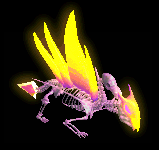 | 職業鎧(270) | 首(450) | 牙(810) | 十字架(1170) | 状態異常回復1(1530) | 兜・帽子(1800) | 双剣(810) | ||
| ブルーエリゲイト4 Zin | アンデット | ボス3 | |||||||
| 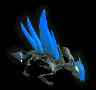 | 片手剣(360) | 首(600) | 腕刺青(1080) | 職業鎧(1560) | 槍投擲機(2040) | 兜・帽子(2400) | クロー(360) | ||
| 装甲ボーンキメラ2 Zin | アンデット | セミ3 | |||||||
 | 能力向上2(110) | 首(180) | 牙(320) | 十字架(460) | 槍投擲機(600) | 兜・帽子(700) | 双剣(320) | ||
| 装甲ボーンキメラ3 Zin | アンデット | ボス2 | |||||||
 | 片手剣(270) | 状態異常回復2(450) | 腕刺青(810) | 職業鎧(1170) | 槍投擲機(1530) | 兜・帽子(1800) | クロー(270) | ||
| ハイエルフ Zin | 人間 | 一般4 | |||||||
 | 片手剣(50) | ブローチ(150) | 足(100) | 能力向上1(80) | 両手剣(20) | 兜・帽子(30) | 鎌(20) | クロー(50) | |
| ハイエルフ2 Zin | 人間 | セミ2 | |||||||
 | 能力向上2(140) | 状態異常回復2(410) | 腕刺青(280) | 十字架(220) | 槍投擲機(60) | 兜・帽子(80) | |||
| ハイエルフ4 Zin | 人間 | ボス2 | |||||||
 | 片手剣(450) | ブローチ(1350) | cP回復(900) | 槍(720) | 肩刺青(180) | 兜・帽子(270) | クロー(450) | 箒(720) | |
| エルフ貴族1 Zin | 人間 | セミ2 | |||||||
 | 片手剣(140) | マント(410) | 能力向上2(280) | 槍(220) | 槍投擲機(60) | 兜・帽子(80) | クロー(140) | 箒(220) | |
| エルフ貴族3 Zin | 人間 | ボス2 | |||||||
| 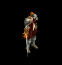 | 片手剣(450) | ブローチ(1350) | 足(900) | 槍(720) | 槍投擲機(180) | 兜・帽子(270) | クロー(450) | 箒(720) | |
| エルフ貴族4 Zin | 人間 | ボス3 | |||||||
 | 片手剣(600) | イヤリング(1800) | 腕刺青(1200) | 鞭(960) | 槍投擲機(240) | 兜・帽子(360) | クロー(600) | ||
| エルフガーディア1 Zin | 人間 | セミ3 | |||||||
 | 片手剣(180) | ブローチ(530) | 帰還(350) | 槍(280) | 状態異常回復1(70) | 兜・帽子(110) | クロー(180) | 箒(280) | |
| エルフガーディア2 Zin | 人間 | ボス1 | |||||||
 | 鍵(250) | イヤリング(750) | 足(500) | 槍(400) | 槍投擲機(100) | 兜・帽子(150) | 箒(400) | ||
| エルフガーディア4 Zin | 人間 | ボス3 | |||||||
 | 片手剣(600) | イヤリング(1800) | 足(1200) | cP回復(960) | 槍投擲機(240) | 兜・帽子(360) | クロー(600) | ||
| 狂魔(狂った悪魔…)1 Zin | 悪魔 | セミ1 | |||||||
 | 片手剣(230) | 爪(280) | 帰還(120) | 鞭(70) | 状態異常回復1(40) | 兜・帽子(20) | クロー(230) | ||
| 狂魔(狂った悪魔…)2 Zin | 悪魔 | セミ2 | |||||||
 | 片手剣(360) | 状態異常回復2(440) | スリング(180) | 能力向上1(110) | 矢(60) | 兜・帽子(30) | クロー(360) | 魔弾(60) | |
| 狂魔(狂った悪魔…)4 Zin | 悪魔 | ボス2 | |||||||
 | 片手剣(1170) | 爪(1440) | スリング(590) | 鞭(360) | 矢(180) | 兜・帽子(90) | クロー(1170) | 魔弾(180) | |
| ゴールデンマスク Zin | 悪魔 | 一般4 | |||||||
 | 片手剣(130) | ブローチ(160) | スリング(70) | 能力向上1(40) | 状態異常回復1(20) | 兜・帽子(10) | クロー(130) | ||
| ゴールデンマスク2 Zin | 悪魔 | セミ3 | |||||||
| 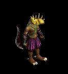 | 片手剣(460) | 爪(560) | 職業鎧(230) | 十字架(140) | 矢(70) | 兜・帽子(40) | クロー(460) | 魔弾(70) | |
| 剣闘士1 Zin | 悪魔 | セミ2 | |||||||
 | 片手剣(360) | 爪(440) | スリング(180) | 鞭(110) | 状態異常回復1(60) | 兜・帽子(30) | クロー(360) | ||
| 剣闘士3 Zin | 悪魔 | ボス2 | |||||||
 | 片手剣(1170) | ブローチ(1440) | スリング(590) | 鞭(360) | 矢(180) | 兜・帽子(90) | クロー(1170) | 魔弾(180) | |
| 剣闘士4 Zin | 悪魔 | ボス3 | |||||||
 | 能力向上2(1560) | 爪(1920) | スリング(790) | 十字架(480) | 状態異常回復1(240) | 兜・帽子(120) | |||
| ダークバッファロ1 Zin | 神獣 | セミ1 | |||||||
 | 指輪(160) | ブローチ(230) | 弾(120) | 鞭(20) | 腕刺青(40) | 兜・帽子(90) | |||
| ダークバッファロ3 Zin | 神獣 | ボス1 | |||||||
 | 指輪(450) | 爪(650) | 弾(350) | 十字架(50) | 肩刺青(100) | 兜・帽子(250) | |||
| ダークバッファロ4 Zin | 神獣 | ボス2 | |||||||
 | 指輪(810) | ブローチ(1170) | 弾(630) | 鞭(90) | 腰(180) | 兜・帽子(450) | |||
| 赤パネルバッファ1 Zin | 神獣 | セミ2 | |||||||
 | 指輪(250) | 爪(360) | 弾(190) | 能力向上1(30) | 腰(60) | 兜・帽子(140) | |||
| 赤パネルバッファ3 Zin | 神獣 | ボス2 | |||||||
 | 指輪(810) | ブローチ(1170) | 弾(630) | 鞭(90) | 腰(180) | 兜・帽子(450) | |||
| 赤パネルバッファ4 Zin | 神獣 | ボス3 | |||||||
 | 指輪(1080) | 爪(1560) | 帰還(840) | 鞭(120) | 状態異常回復1(240) | 兜・帽子(600) | |||
| エメラルドバッファ Zin | 神獣 | セミ1 | |||||||
 | 指輪(160) | ブローチ(230) | 弾(120) | 鞭(20) | 腰(40) | 兜・帽子(90) | |||
| エメラルドバッファ2 Zin | 神獣 | セミ3 | |||||||
 | 指輪(320) | 爪(460) | 弾(250) | 鞭(40) | 腰(70) | 兜・帽子(180) | |||
| エメラルドバッファ3 Zin | 神獣 | ボス2 | |||||||
 | 指輪(810) | 状態異常回復2(1170) | 帰還(630) | 鞭(90) | 腰(180) | 兜・帽子(450) | |||
| 破壊術師 | 人間 | ボス1 | |||||||
| 杖(470) | スリング(310) | 弾(470) | 兜・帽子(260) | 首(240) | 能力向上2(190) | 本(470) | ||
| 破壊術師 Ex | 人間 | ボス1 | |||||||
| 杖(1200) | スリング(800) | 弾(1200) | 兜・帽子(670) | 首(600) | 能力向上2(480) | 本(1200) | ||
| 悪霊 Ex | 神獣 | 一般2 | |||||||
| 笛(380) | 翼(250) | 盾(380) | 兜・帽子(210) | 指輪(190) | 特殊1(150) | 水晶(250) | ||
| 深淵の強者 Ex | 神獣 | ボス3 | |||||||
| スリング(2800) | 翼(1870) | 弾(2800) | 兜・帽子(1560) | イヤリング(1400) | 特殊1(1120) | 水晶(1870) | ||
| 番人 | 悪魔 | 一般3 | |||||||
| 笛(360) | 翼(240) | 状態異常回復1(360) | 兜・帽子(200) | 冠(180) | 帰還(140) | 水晶(240) | ||
| 監視者 | 悪魔 | 一般4 | |||||||
| 笛(300) | 翼(200) | 状態異常回復1(300) | 兜・帽子(170) | 首(150) | 帰還(120) | 水晶(200) | ||
| 見識者 | 悪魔 | セミ2 | |||||||
| 投擲(420) | 翼(280) | 状態異常回復1(420) | 兜・帽子(230) | 冠(210) | 帰還(170) | 水晶(280) | |||
| ガウス | 悪魔 | セミ3 | |||||||
| 笛(450) | 翼(300) | 鍵(450) | 兜・帽子(250) | 首(230) | 帰還(180) | 水晶(300) | ||
| イビルアイ | 悪魔 | ボス2 | |||||||
| 投擲(490) | 翼(330) | cP回復(490) | 兜・帽子(270) | 冠(250) | 帰還(200) | 水晶(330) | ||
| 見張り Ex | 悪魔 | 一般3 | |||||||
| 笛(360) | 翼(240) | 状態異常回復1(360) | 兜・帽子(200) | 冠(180) | 帰還(140) | 水晶(240) | ||
| 監視者 Ex | 悪魔 | 一般4 | |||||||
| 笛(300) | 翼(200) | 状態異常回復1(300) | 兜・帽子(170) | 首(150) | 帰還(120) | 水晶(200) | ||
| 見識者 Ex | 悪魔 | セミ2 | |||||||
| 投擲(650) | 翼(430) | 状態異常回復1(650) | 兜・帽子(360) | 冠(330) | 帰還(260) | 水晶(430) | |||
| ガウス Ex | 悪魔 | セミ3 | |||||||
| 笛(800) | 翼(530) | 鍵(50) | 兜・帽子(440) | 首(400) | 帰還(320) | 水晶(530) | ||
| エビルアイ Ex | 悪魔 | ボス2 | |||||||
| 投擲(2000) | 翼(1330) | cP回復(2000) | 兜・帽子(1110) | 冠(1000) | 帰還(800) | 水晶(1330) | ||
| スコルピオ | 動物 | 一般1 | |||||||
| 弓(410) | 槍(270) | 盾(410) | 兜・帽子(230) | イヤリング(210) | 特殊1(160) | 箒(270) | 銃(410) | ||
| 毒サソリ | 動物 | 一般2 | |||||||
| 弓(380) | 槍(250) | 矢(380) | 兜・帽子(210) | 手首(190) | 特殊1(150) | 箒(250) | 銃(380) | 魔弾(380) | |
| 鋏サソリ | 動物 | 一般3 | |||||||
| 弓(360) | 槍(240) | 盾(360) | 兜・帽子(200) | イヤリング(180) | 特殊1(140) | 箒(240) | 銃(360) | |
| スコルピオハンタ | 動物 | セミ2 | |||||||
| 弓(420) | 槍(280) | 矢(420) | 兜・帽子(230) | イヤリング(210) | 特殊1(170) | 箒(280) | 銃(420) | 魔弾(420) | |
| スノースコルピオ | 動物 | ボス2 | |||||||
| 弓(490) | 槍(330) | 盾(490) | 兜・帽子(270) | 手首(250) | 特殊1(200) | 箒(330) | 銃(490) | |
| スコルピオ Ex | 動物 | 一般1 | |||||||
| 弓(410) | 槍(270) | 盾(410) | 兜・帽子(230) | イヤリング(210) | 特殊1(160) | 箒(270) | 銃(410) | ||
| 毒サソリ Ex | 動物 | 一般2 | |||||||
| 弓(380) | 槍(250) | 矢(380) | 兜・帽子(210) | 手首(190) | 特殊1(150) | 箒(250) | 銃(380) | 魔弾(380) | |
| 鋏サソリ Ex | 動物 | 一般3 | |||||||
| 弓(360) | 槍(240) | 盾(360) | 兜・帽子(200) | イヤリング(180) | 特殊1(140) | 箒(240) | 銃(360) | |
| スコルピオハンタ Ex | 動物 | セミ2 | |||||||
| 弓(650) | 槍(430) | 矢(650) | 兜・帽子(360) | イヤリング(330) | 特殊1(260) | 箒(430) | 銃(650) | 魔弾(650) | |
| スノースコルピオ Ex | 動物 | ボス2 | |||||||
| 弓(2000) | 槍(1330) | 盾(2000) | 兜・帽子(1110) | 手首(1000) | 特殊1(800) | 箒(1330) | 銃(2000) | |
| イナゴの大群 | 動物 | セミ1 | |||||||
| 笛(390) | 翼(260) | イベント(390) | 兜・帽子(220) | 首(200) | 帰還(160) | 水晶(260) | ||
| イナゴの大群 Ex | 動物 | セミ1 | |||||||
| 笛(450) | 翼(300) | イベント(450) | 兜・帽子(250) | 首(230) | 帰還(180) | 水晶(300) | ||
| ストーンガゴイル Ex | 神獣 | 一般1 | |||||||
| 鞭(410) | 翼(270) | 鍵(10) | 兜・帽子(230) | 爪(210) | 能力向上1(160) | 水晶(270) | ||
| ブロンズガゴイル Ex | 神獣 | 一般4 | |||||||
| 鞭(300) | 翼(200) | 鍵(10) | 兜・帽子(170) | 爪(150) | 能力向上1(120) | 水晶(200) | ||
| アイアンガゴイル Ex | 神獣 | セミ1 | |||||||
| 鞭(450) | 翼(300) | 鍵(20) | 兜・帽子(250) | 爪(230) | 能力向上1(180) | 水晶(300) | ||
| 水晶ガゴイル Ex | 神獣 | セミ2 | |||||||
| 鞭(650) | 翼(430) | 鍵(40) | 兜・帽子(360) | 爪(330) | 能力向上1(260) | 水晶(430) | ||
| 超合金ガゴイル Ex | 神獣 | ボス2 | |||||||
| 鞭(2000) | 投擲(1330) | 鍵(60) | 兜・帽子(1110) | 爪(1000) | 能力向上1(800) | |||
| ボーンドラゴン Zin | アンデット | 一般4 | |||||||
| 片手剣(30) | 首(50) | 牙(90) | 職業鎧(130) | 状態異常回復1(170) | 兜・帽子(200) | クロー(30) | 双剣(90) | |
| ハイエルフ Zin | 人間 | 一般4 | |||||||
| 片手剣(50) | ブローチ(150) | 足(100) | 能力向上1(80) | 両手剣(20) | 兜・帽子(30) | 鎌(20) | クロー(50) | |
| 時の猛獣 Zin | 動物 | ボス1 | |||||||
| 翼(1000) | 笛(670) | 鍵(130) | 兜・帽子(560) | 爪(500) | 宝石(400) | 水晶(1000) | |||
| 戦慄のサソリ Zin | 動物 | ボス2 | |||||||
| 弓(1100) | 槍(730) | 盾(1100) | 兜・帽子(610) | 手首(550) | 特殊1(440) | 箒(730) | 銃(1100) | |
| 森の守り人 Zin | 悪魔 | セミ2 | |||||||
| 投擲(750) | 翼(500) | 状態異常回復1(750) | 兜・帽子(420) | 冠(380) | 帰還(300) | 水晶(500) | |||
| ガウス Zin | 悪魔 | セミ3 | |||||||
| 笛(900) | 翼(600) | 鍵(40) | 兜・帽子(500) | 首(450) | 帰還(360) | 水晶(600) | ||
| ボーンドラゴン Zin | アンデット | 一般4 | |||||||
| 片手剣(30) | 首(50) | 牙(90) | 職業鎧(130) | 状態異常回復1(170) | 兜・帽子(200) | クロー(30) | 双剣(90) | |
| ハイエルフ Zin | 人間 | 一般4 | |||||||
| 片手剣(50) | ブローチ(150) | 足(100) | 能力向上1(80) | 両手剣(20) | 兜・帽子(30) | 鎌(20) | クロー(50) | |
| デスピンサーEv | 動物 | 一般3 | |||||||
| 弓(1560) | 槍(1040) | 盾(1560) | 兜・帽子(870) | イヤリング(780) | 特殊1(620) | 箒(1040) | 銃(1560) | |
| ゾンビEv | アンデット | 一般3 | |||||||
| 投擲(1560) | 牙(1040) | イベント(1560) | 兜・帽子(870) | 爪(780) | 帰還(620) | 双剣(1040) | ||
| コートナイトEv | 人間 | 一般3 | |||||||
| 槍(1560) | 両手剣(1040) | イベント(1560) | 兜・帽子(870) | 手首(780) | 十字架(130) | 鎌(1040) | 箒(1560) | |
| 骸骨剣士Ev | アンデット | 一般3 | |||||||
| 片手剣(1560) | 弓(1040) | 矢(1560) | 兜・帽子(870) | 槍投擲機(780) | 帰還(620) | クロー(1560) | 銃(1040) | 魔弾(1560) |
| アイウィングEv | 悪魔 | 一般3 | |||||||
| 笛(1560) | 翼(1040) | 状態異常回復1(1560) | 兜・帽子(870) | 冠(780) | 帰還(620) | 水晶(1040) | ||
| エルフ暗殺者Ev | 人間 | 一般4 | |||||||
| 片手剣(1200) | 投擲(800) | 盾(1200) | 兜・帽子(670) | 指輪(600) | 腕刺青(130) | クロー(1200) | ||
| マーブルガゴイルEv | 神獣 | 一般4 | |||||||
| 鞭(1200) | 翼(800) | 鍵(40) | 兜・帽子(670) | 爪(600) | 能力向上1(480) | 水晶(800) | ||
| ドゥームスフィアEv | 悪魔 | 一般4 | |||||||
| 笛(1200) | 翼(800) | 状態異常回復1(1200) | 兜・帽子(670) | 首(600) | 帰還(480) | 水晶(800) | ||
| エルフガーディアEv | 人間 | セミ3 | |||||||
| 片手剣(180) | ブローチ(530) | 帰還(350) | 槍(280) | 状態異常回復1(70) | 兜・帽子(110) | クロー(180) | 箒(280) | |
| スノースコルピオEv | 動物 | ボス2 | |||||||
| 弓(1100) | 槍(730) | 盾(1100) | 兜・帽子(610) | 手首(550) | 特殊1(440) | 箒(730) | 銃(1100) | |
| 両刀骸骨戦士Sp | アンデット | 一般4 | |||||||
| 片手剣(1200) | 弓(800) | 矢(1200) | 兜・帽子(700) | 槍投擲機(600) | 帰還(500) | クロー(1200) | 銃(800) | 魔弾(1200) |
| 狂魔Sp | 悪魔 | 一般4 | |||||||
| 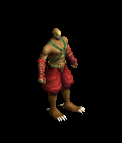 | 片手剣(1200) | ブローチ(1400) | 投擲(1400) | 鞭(100) | 矢(200) | 兜・帽子(100) | クロー(1100) | 魔弾(200) | |
| 狂魔Sp | 悪魔 | セミ1 | |||||||
 | 片手剣(600) | 爪(700) | スリング(200) | 翼(1100) | 状態異常回復1(100) | 兜・帽子(200) | クロー(400) | 水晶(1100) | |
| 赤パネルバッファ4 Sp | 神獣 | 一般4 | |||||||
| 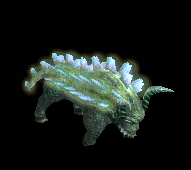 | 指輪(1100) | 爪(1500) | 帰還(800) | 鞭(200) | 状態異常回復1(300) | 兜・帽子(600) | |||
| ブルーエリゲイト4 Sp | アンデット | セミ1 | |||||||
| 片手剣(300) | 首(500) | 十字架(900) | 能力向上2(500) | 兜・帽子(1000) | クロー(1100) | ||||
| 狂魔2 Sp | 悪魔 | セミ1 | |||||||
| 片手剣(600) | 爪(700) | スリング(200) | 翼(1100) | 状態異常回復1(100) | 兜・帽子(200) | クロー(400) | 水晶(1100) | |
| スリップワーカーSp | アンデット | 一般4 | |||||||
| 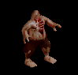 | スリング(1200) | 弾(800) | ステッキ(1200) | 兜・帽子(700) | 首(600) | ブローチ(100) | |||
| ハイエルフ Sp | 人間 | 一般4 | |||||||
 | 片手剣(50) | ブローチ(150) | 足(100) | 能力向上1(80) | 両手剣(20) | 兜・帽子(30) | 鎌(20) | クロー(50) |